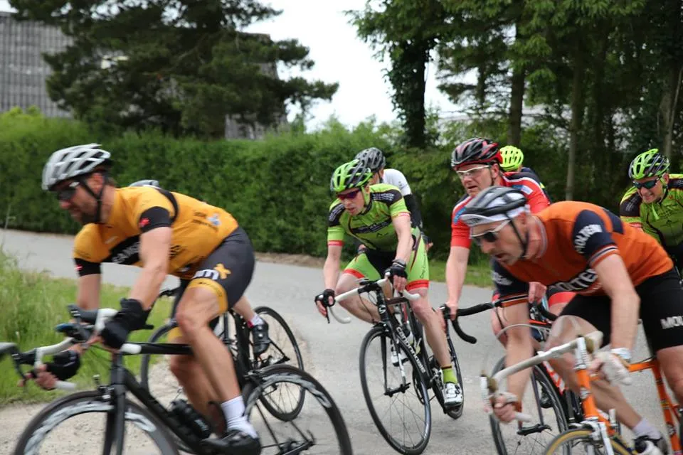

Optakt: Uldum Kriterium

Dér ude lidt til højre for dér, hvor kragerne vender – dér køres årets bedste og mest prestigefyldte Kriterium i den danske cykelkalender. Nemlig Uldum Kriterium. Squadra Molteni sender en frygtindgydende trio til start.
Sceneriet er som klippet ud af en Morten Korch film, når Uldum CM afholder det årlige kriterium. Der køres ræs i 60 minutter på en 6 km rundstrækning ad små sogneveje rundt om et par marker og to-tre bondegårde.
Vi har udtaget Kaptajn Bjørnsteen, Max van de watt Nielsen og Capitaine de Route Peter Meinert til at køre Uldum Kriterium. Taktikken er som den plejer. Og hvis nogen skulle være i tvivl, så går den på, at Squadra Molteni vil stikke i højre og venstre…

Uldum Kriterium køres onsdag 13. juni, og har start ved Uldum Mølle, Skolegade 25, 7171 Uldum kl. 18.30